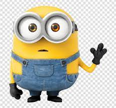

Een Ongewenste Lift
Verhaal
Wanneer Mats Louwerse eindelijk als informant voor de AIVD aan de slag mag, wordt zijn beoordelingsvermogen gelijk op de proef gesteld. De twee smokkelaars die hij moet schaduwen zijn namelijk niet van het soort dat Mats had zien aankomen. Bloed zweet en tranen staan hem te wachten op de lange smokkelroute. De achtervolging wordt nog complexer wanneer Mats ineens zit opgescheept met een lifter waar hij niet vanaf komt.
Trailer
Posters


Credits
Civitas Producties
- Ruben van Briemen
- Boris Steenhuis
- Johan Ras
- Jeanine de Jong
Hoofdacteurs
- Lucas van Rossum
- Janine de Wit
- Wilgemijne Prins
- Nathan van Beugen
Introanimatie
- Job de Vogel
Make-up en kleding
- Annah van der Lelij
- Sarah Duister
- Eva Geleynse
- Juliette Feldbrugge
Muziek
- Vroukje van der Vliet
- Ferdy van den Bos
- Nathan Kramer
PR-materiaal
- Julian Aantjes
- Fiene Kuiper
Overige acteurs en figuranten
- Suzanne Volk
- Daniël Paul
- Timon Kuijper
- Rebecca Kemeling
- Aurelio Bulla
- Marjolein Pellikaan
- Sarah Jacobse
- Isa de Rooij
- Jochem van Dijk
- Josh Witteveen
- Levi Hartendorp
- Lisa Weijts
- Mark Kunts
- Marten Bomhof
- Niels de Rooij
- Niels van de Wetering
- Naut van der Eijk
- Arnaud van der Eijk
- Iris van der Eijk
- Manasse Heijkoop
- Vroukje van der Vliet
- David van der Laan
- Bart van Koeveringe
- Alicia van Zeijl
- Timon van Eeken
- Simon Gebraad
- Harmen Visser
- Loïs Koelstra
- Anneruth van Oostveen
- Matthijs Borst
- Guus Gorsse
Ook dank aan
- Lisa Weijts - softbox klussen
- Julian Aantjes - camera lenen
- Opa van Ruben van Briemen - camera lenen
- Vader en moeder van Boris - Tesla’s lenen
- Coen Kramer - kamer gebruiken
- Vader van Jeanine - spullen, connectie en auto
- Lotte van den Heuvel - automobilist achtervolging en tweede auto parkeergarage
Locaties
- Waalpartners - Rebecca Kemeling
- Restaurant Paddle’s - Familie De Rooij
- Kruidenloods - Met dank aan de connecties van Papa Sjaen
- Camping Den Heuvel
- Camping De Klos - Tonnie
- Burgerhuis - Familie Van der Have
- Café Loetje Delft